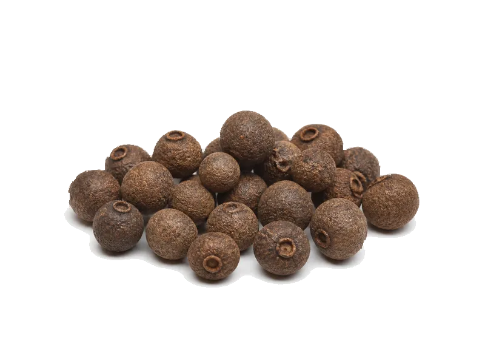

Przyprawy
Ziele angielskie
Ziele angielskie: 6 g białka, 263 kcal, 72 g węglowodanów i 8.7 g tłuszczu na 100 g. Kategoria: Przyprawy.
Kalorie263 kcalna 100 g
Białko / proteiny6 g
Węglowodany72 g
Tłuszcz8.7 g
Cena (szac.)~29,00 złza 100 g
Ceny zaktualizowano: maj 2026 (szacunek — ceny w popularnych supermarketach)
Porcja: ziarno (1 g)
| Kalorie | 3 kcal |
|---|---|
| Białko | 0.1 g |
| Węglowodany | 0.7 g |
| Tłuszcz | 0.1 g |
| Cena (szac.) | ~0,29 zł |
Szczegółowe składniki odżywcze na 100 g
| Wartość energetyczna (kalorie) | 263 kcal |
|---|---|
| Białko (proteiny) | 6 g |
| Węglowodany | 72 g |
| Tłuszcz | 8.7 g |
| Tłuszcze nasycone | 2.5 g |
| Tłuszcze nienasycone | 6.2 g |
| Witaminy i minerały (skrót) | Mangan, Żelazo, Wapń |
| Współczynnik kcal / 1 g białka | 43.8 |
| Cena produktu (szac. za 100 g) | ~29,00 zł |
| Cena za 100 g białka (szac.) | ~483,33 zł |
Witaminy i minerały na 100 g
Ilość w 100 g produktu oraz orientacyjny % dziennego zapotrzebowania (RDA) dla dorosłej osoby. Żelazo wg normy dla kobiet; sód jako % limitu. Wartości typowe (USDA / tabele żywieniowe / etykiety) — mogą się różnić między markami.
-
Witamina A 100 µg
-
Witamina C 10 mg
-
Witamina K 50 µg
-
Wapń 600 mg
-
Żelazo 15 mg
-
Magnez 150 mg
-
Potas 1000 mg
-
Cynk 2 mg
-
Selen 5 µg
-
Miedź 500 µg
-
Mangan 8 mg
-
Sód 200 mg